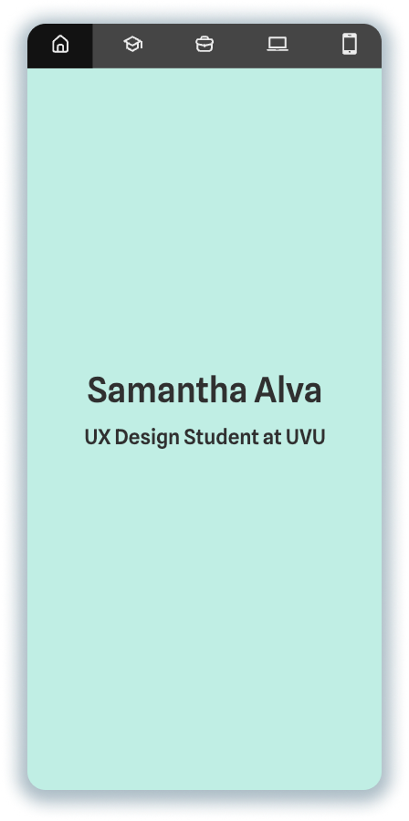
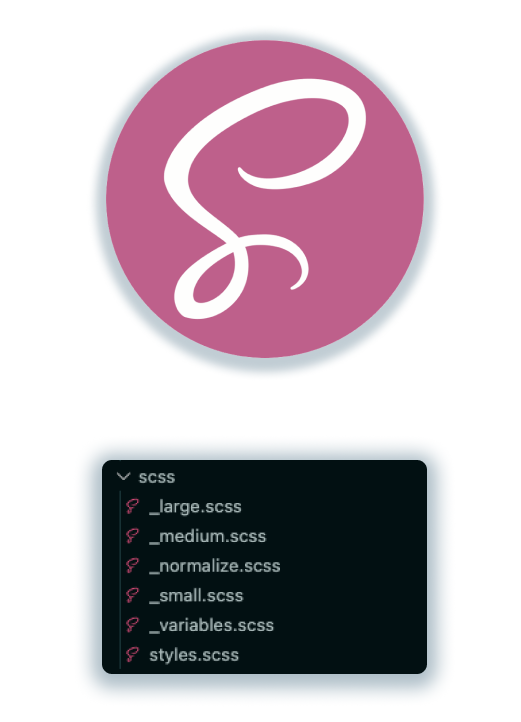
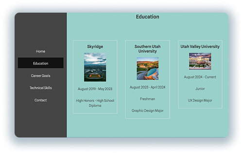
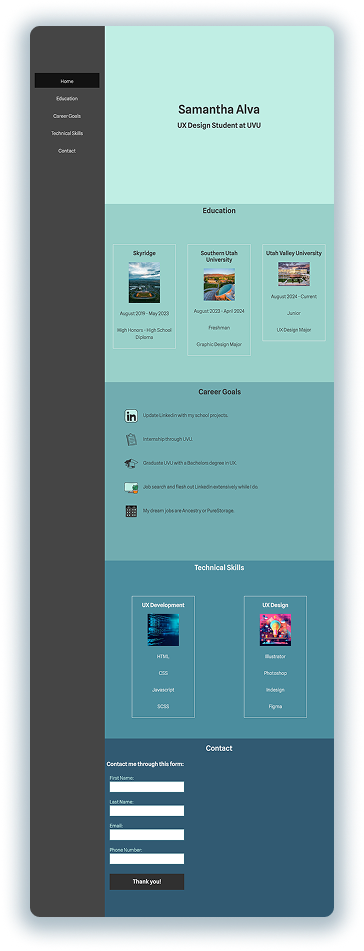

Developing with Copilot
Learning AI Prompting the hard way
Project Overview
Coding classes were always more difficult than my UX design courses. I mean, it makes sense.
We had one development class per semester, and these were typically online. I had to tackle
foreign concepts without in-person support, and some essential skills weren’t really taught:
debugging, developer lingo, you get the idea.
This particular assignment was challenging because I was testing the waters with GitHub's AI
assistant, Copilot. This did speed up my workflow, and it was nice to put that time to other
assignments. However, we were never taught how to vibe code. This led to a plethora of
issues during the making of my Portfolio Assignment, which was one module before the
Capstone. My classes were really picking up, so I made the hasty mistake of using Github
Copilot to directly modify my code without checking the files before committing changes.
This complicated things due to the navigation scheme I was working with: Each viewport
showed its’ navigation links differently. For mobile, logos are depicted at the top of the
screen. For tablet, words are at the top of the screen. For desktop, words are listed on the
side of the screen. I should also mention that there was only one page. Each navigation link
jumped to a separate section on the page. With unfamiliar territory, limited time, and
inexperience with AI, there was a storm brewing on the horizon - I just didn’t feel the rain
yet.

Working with Cascading Style Sheets
To understand the problem, we have to understand the methodology of this course. I was using
HTML, CSS, and a little bit of Javascript. However, we also tackled utilizing SASS, a
software that offers multiple CSS files (known as SCSS partials), and the ability to
compress files into minified CSS for faster runtimes on browsers. Your SCSS partials feed
into these overarching CSS files, which are routinely updated by a SASS compiler. This
software is amazing because large amounts of code can be organized between different files.
However, files should be checked regularly to ensure everything is in order, which is
something I neglected to do.
UX developers are advised to code mobile viewports first when doing responsive design. This
is because of Cascading Style sheets. Everything created in your _small.scss file (mobile
screen) will carry over to the _medium.scss file (Tablet screen) until changed. This same
idea carries over to your _large.scss file (Desktop screen). You simply code in your small
file, then make necessary changes (font size, image size, etc.) for your medium file. Any
changes made in your small file will carry over to the other two unless changed.
This mirrors how UX designers tackle layouts for responsive design. It’s easier to add
elements than take elements away, which is why we save desktop designs for last. This allows
for a flexible and free-flowing design process with less headaches. In this way, I feel like
CSS bridges the gap between design and development. It’s a nice consideration, but it can be
detrimental to a novice developer using GitHub Copilot for the first time.

Never Trust the Sycophant
I remember one of my professors using the word “Sycophant” to describe AI. In other words,
someone who praises another for personal gain. AI won’t always tell you the truth. It simply
wants you happy, so you keep using its service. This is especially important when coding,
because AI may say it did exactly what you want, but you check the code and raise a brow
instead.
I was almost done with my assignment. My mobile screen and tablet screens were both polished
for submission. I had worked my way up to desktop screens, and usually, you wouldn’t have to
touch the smaller viewports after they were finished. The code within _large.scss would do
nothing to change your small or medium files. I was really tired near the tail-end of this
project, which had taken at least two hours by this point, so I was asking Copilot for a lot
of help. I committed multiple suggestions in a row, all while looking at the Live Sever on
my second monitor. It all looked fine to me, so when I had “finished”, imagine my surprise
when my other viewports were completely messed up.
After a few minutes of troubleshooting, I realized that GitHub Copilot had been modifying my
smaller viewports behind my back. These modifications took advantage of the Cascading Style
Sheet mechanism, which made my desktop look pristine at the expense of my hard work in the
smaller viewports. Navigation schemes were messed up, content was all over the place, and I
couldn’t simply undo it all. My AI prompts were over the span of a few hours, so asking
Copilot to simply undo everything didn’t work. I also didn’t want to lose my hard work in
the desktop view, so I begrudgingly went on a 3 hour excursion to untangle the knots Copilot
had left me.

A Lesson Worth Learning
Fixing all of these hidden mistakes cost me a lot of time. I was hoping to align elements and clean things up before submission, but I had spent too much time unraveling the issues Copilot had caused. The final product of this assignment really suffered because my mistake.
AI is a valuable tool that can speed up your workflow and give you more time for other important tasks. However, there are limits that I simply didn’t know at the time. It’s great for debugging and troubleshooting, but creating elements for your code is a slippery slope. Maybe you didn’t establish the syntax structure, ID names, or CSS elements Copilot is using. You won’t understand your code, which causes a lot of mental strain when you go in and make changes. Additionally, while Copilot knows how to code, it doesn’t understand core coding principles, like the proper use of Cascading Styling Sheets, dry coding, or naming conventions for ID’s and classes that we can recognize. These principles streamline coding processes for humans, which is something AI doesn’t need to do. If prompted incorrectly, it will simply make a product, not a product you can easily edit.
I should have understood these limitations and checked my SCSS partials routinely during the process. I should have verified every change before committing. Not only that, but I shouldn’t have trusted Copilot more than I trusted myself. Finally, I wish I had saved documentation of my messed up project while it was at its worst. Case studies weren’t on my mind at the time, but showing off those visuals would have effectively communicated the extent of the damage I saw.
All things considered, I was satisfied with the assignment I turned in. It wasn’t as polished as my original plan, but it looked decent given the circumstances. Instead of a piece to show off, this project was a harsh learning experience - and these lessons will carry into my coding habits for the rest of my life.
